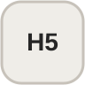
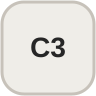

Projects / Website
Website projects
Selected website work using the same minimal project layout and CSS-only presentation.
01
Project description
Explain the website's purpose, your design or development responsibilities, and one or two technical details that make the project worth showing.
Tools


02
Project description
Replace the video with a screen recording of the live site. This layout is intentionally simple so the work itself remains the focus.
Tools
03
Project description
Add the final project's goal, target audience, main features, and your contribution here.
Tools